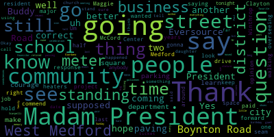

[Morell]: The 34th regular meeting November 29 2022 of the Medford City Council is called to order Mr. Clerk, please call the role.
[Hurtubise]: Vice President Bears. President. President, Councilor Collins, President Councilor Knight, President Councilor Scarpelli, President Councilor Tseng, President, President Morell, President seven present zero absent, please rise to salute flag.
[Morell]: I pledge allegiance to the flag of the United States of America and to the Republic for which it stands, one nation, under God, indivisible, with liberty and justice for all. And now, faculty, the references reports and records. see it so resolved that the Medford City Council send its deepest and sincere condolences to the family of Edward Buddy Clayton. On his recent passing at 94 years old, Buddy was a veteran of the U.S. Army and retired from the United States Postal Service as a district manager. His presence in our community will be dearly missed. Councilor Caraviello.
[Caraviello]: Thank you, Madam President. Our community lost a giant in the West Medford area with Buddy Clayton. He was He was a man that was tall in stature and an icon in the West Medford community. He was at every event at the West Medford Community Center and everything that went on there and a long time resident. And as Councilor Scarpelli mentions, this is another big pair of shoes that we're gonna have a hard time filling going forward in this community. So my condolences to our buddy and his family on his recent passing.
[Morell]: Thank you, Councilor Caraviello. Councilor Scarpelli.
[Scarpelli]: Um, thank you, madam president. And, uh, I know that Casa Caraviello has said it all, but, um, I know that the, uh, what, what buddy Clayton did, um, uh, what he's done for our community and the way he's raised his children to give back to our community and his grandchildren is something that, uh, is a great example for all of us to follow. He was a true gentleman. I know. I don't think I've ever. ever recalled Mr. Clayton ever having a sour puss in his face or an angry look. He was always smiling, always pleasant. And if you look at his children, they have the same demeanor. So, um, he was a great man. He, he leaves, uh, uh, an unbelievable legacy and, uh, he's truly going to be missed. And again, um, especially in the West, West Medford neighborhood. So, uh, condolences to his family, madam president. Thank you.
[Morell]: Thank you Councilor Scarpelli. Any further discussion from the council? I'm still moving folks around so I can see everyone on my screen.
[Knight]: Move approval.
[Morell]: On the motion of Councilor Knight, seconded by Councilor Caraviello.
[Caraviello]: If we could name this meeting in memory of Buddy Clayton. So moved.
[Morell]: So on the motion of Councilor Caraviello as seconded by Councilor Knight, Mr. Clerk, please call the roll. No, it's above the UNC.
[Hurtubise]: You're muted. Yes.
[Morell]: Yes.
[Hurtubise]: Yes. Yes. Yes. Yes. Yes. Yes. Yes. Yes. Yes. Yes. Yes. Yes.
[Scarpelli]: Can we just let Councilor Cabell know that I know he's got his earplugs in, but we can hear Carol's conversations, Ricky, just so you know. Tell her I said hi, I love that recipe.
[Morell]: Thank you, Councilor Scarpelli.
[Unidentified]: Please rise for a brief moment of silence. Moving to 2-2-B. It's so resolved that the councilor Caraviello. President McGill, your audio appears to be frozen. Your last speech was garbled. Apologies. One moment. Apologies, Vice President Bears. Looks like we lost President Burrell there.
[Bears]: I will do my best to facilitate.
[Morell]: Apologies, Vice President Bears, yeah.
[Bears]: Sorry, I'm down with the flu, but I'll do my best. 22-577 offered by Councilor Caraviello, be it so resolved that the Medford City Council commend and congratulate Margaret Maggie Giordano on the celebration of her 100th birthday. Councilor Caraviello.
[Caraviello]: Thank you, Mr. President. Those of you who don't know Maggie, Maggie's the mother of one of our favorite retired policemen, Paul Giordano. And I just wanted to commend her for her celebration for her 100th birthday, which is coming up this Sunday. So just a little bit of a congratulations to her and I hope I get to be 100 years old.
[Knight]: Thank you, Mr. President, thank you very much. Although I don't know Mrs. Giordano personally, I do know her son, Paul. He's a gentleman and a scholar. He was a great police officer here in the city of Medford. More importantly, he's a great person. If he's anything of a reflection of his mother, then God willing, she must be a great person as well. Thank Councilor Garavaglia for bringing this matter up. He seems always to be very well in tune and plugged in with the neighborhoods in this community. And this is just the perfect example of that. I move approval.
[Bears]: On the motion of Councilor Knight, seconded by Councilor Garavaglia. Oh, sorry, go ahead Councilor Scarpelli.
[Scarpelli]: No, no, I'll step, thank you.
[Bears]: Mr. Clerk, please call the roll.
[Hurtubise]: Vice President Bears. Yes. Sorry I called you first I know you're presiding. Council carry on. Yes. Council calls. Yes. Council night. Yes. Councilor Scarpelli. Yes. Councilor Tseng, Yes.
[Morell]: Yes, and I can take back over the chair. So that's seven the affirmative, zero the negative, the motion passes. And I am hardwired in now, so we should be solid. Records, the records of the meeting of November 15th, 2022 were passed to Councilor Scarpelli. Councilor Scarpelli, how did you find them?
[Scarpelli]: I found them all in order, Madam President, move approval. Second.
[Morell]: The motion of Councilor Scarpelli is seconded by Councilor Knight. Mr. Clerk, please call the roll.
[Hurtubise]: Quick second, please. Vice President Bears. Yes. Council KVL. Yes. Council Collins. Yes. Council night. Yes.
[Morell]: Yes, I mean the firm is here and the negative motion passes. Reports of committees 22-014 and 22-395, number 16 committee of the report, committee of the whole report to follow. This was the committee of the whole on the discussions around PFML being applied to the city as well as ARPA survey results. On the motion of Councilor Knight to approve and seconded by Councilor Tseng. Mr. Clerk, please call the roll.
[Hurtubise]: Vice President Bears. Yes. Yes. Yes. Yes. Yes. Yes. Yes. Yes.
[Unidentified]: Yes.
[Morell]: Yes, seven in front of zero and the negative, the motion passes. 21-053, November 22nd, 2022, Subcommittee on Housing report to follow. I will hand it to Housing Subcommittee Chair, Councilor Collins.
[Collins]: Thank you, President Morell. The Housing Subcommittee met again to discuss the proposed Housing Stability Notification Ordinance. We had a robust discussion with relevant city staff regarding enforcement and implementation, and we referred it to Committee of the Whole to continue the discussion with other councilors.
[Morell]: Thank you. On the motion of our system bears to approve second by Councilor Scarpelli, Mr. Clerk, please call the roll.
[Hurtubise]: Vice President Bears. Yes. Yes. Yes. Yes. Yes. Yes. Yes. Yes. Yes. Yes.
[Bears]: Madam President, motion to suspend the rules to take paper 22-582.
[Morell]: On the motion of Vice President Bears to suspend the rules to take paper 22-582, a petition for a common bit license. Motion from Vice President Bears, do I have a second?
[John Freedman]: So moved.
[Morell]: Seconded by Councilor Knight. Mr. Clerk, please call the roll.
[Hurtubise]: Vice President Bears. Yes. Yes. Yes. Yes. Yes. Yes. Yes. Yes. Yes. Yes. Yes. Yes.
[SPEAKER_14]: Yes.
[Morell]: 22-582, petition for a common ventilator license by Ineo Duca, 8 Benton Street, Apartment 1, Stonehead, Massachusetts, 02180, for Eddie's Place, 301 Salem Street, Medford, Massachusetts. I do believe we have the petitioner here, if we would like to hear from him first, and then we can go to Councilor Scarpelli, Chair of Licensing, unless we'd like to start with you, Councilor Scarpelli.
[Scarpelli]: I mean, it seems like it's pretty simple, Madam President. Can the petition just let us know what this process is? Is it leaving ownership? Is it just staying within the ownership of different people within the system?
[Enio Duka]: Hi, how are you? So for now, it's just the change of the ownership. So I have been working over there for three years, and now we are changing just the ownership. So I'm going to be the new owner. It's going to be the same staff, the same manager and everything. All right, the hours are the same and... Yeah, hours are the same. It's 10 a.m. to 10 p.m. It's five employers, including me.
[Scarpelli]: Same employees, everything's the same. Well, I'd be honest with you, Madam President, Eddie's place has been... I've never heard a complaint. I know that I'm a little biased. My daughter's favorite... So, she... Grilled chicken salad. Yeah, all the order, everything is in order. I would move approval with any questions from my fellow council. Second.
[Morell]: Thank you, Councilor Scarpelli. Any questions or discussion from the council? Seeing none, on the motion of Councilor Scarpelli to approve, seconded by Councilor Knight. Mr. Clerk, please call the roll.
[Hurtubise]: Vice President Bears. Yes. Councilor Caraviello. Yes. Councilor Collins. Yes. Councilor Knight.
[SPEAKER_14]: Yes.
[Hurtubise]: Councilor Scarpelli. Yes. Councilor Tseng. Yes. President Morell.
[Morell]: Yes. Seven in front of zero and the negative the motion passes. Congratulations.
[Hurtubise]: Thank you.
[Scarpelli]: Thank you, buddy. Thank you.
[Morell]: Do I have we're still under suspension to have a motion to return to the regular order of business.
[Bears]: To avoid another roll call, I just moved to spend for that one paper. So I would say that we are back to the regular quarter.
[Morell]: I am fine with that assessment. So going back to regular order of business. We are at hearings. 22-573, legal notice of a public hearing City of Medford. The Medford City Council will hold a public hearing via Zoom on Tuesday, November 29th, 2022 at 7 p.m. A link to the hearing will be posted no later than Tuesday, November 22nd, 2022. This hearing was originally scheduled for November 22nd, 2022, but rescheduled to November 29th, 2022 when the November 22nd meeting was postponed and rescheduled in its entirety. The purpose of this hearing is to hear the board of assessors on the following items. for the purpose of allocation of the FYI 2023 property tax to determine the resident one to determine the residential factor to be used for a brief synopsis by the interim chief assessor, please, Madam President, on the emotion of counseling to where the reading and in favor of a brief synopsis from the interim assessor seconded by cancer Scarpelli, Mr. Clerk, please call the roll.
[Hurtubise]: Vice President Bears. Councilor Caraviello. Yes. Councilor Collins. Yes. Councilor Knight.
[SPEAKER_14]: Yes.
[Hurtubise]: Councilor Scarpelli. Yes. Councilor Tseng. Yes. President Morell.
[Morell]: Yes. So I mean the firm is during the negative motion passes the weaving is Ray waved, passing it over to Ellen Bordeaux who is our interim chief assessor for a brief synopsis of the public hearing paper before us. I'm asking you to unmute.
[Ellen Brideau]: Here we go, beautiful. Good evening, Council President Morell, and thank you for allowing, and I'm thrilled that this is via Zoom, certainly made it a little easier for me. So instead of me going through this whole presentation, you're just requesting that I do an overview of where we are and what needs to occur this evening?
[Hurtubise]: Yes.
[Ellen Brideau]: Okay. So annually, I'm so sorry.
[Scarpelli]: No, go ahead, I'm sorry.
[Ellen Brideau]: Do you need to share your screen, Ellen? I'm happy to do that. If you can go ahead and make me a co-host. Mr. Clerk, if you could do that.
[Hurtubise]: Absolutely.
[Unidentified]: All set. Okay. There we go.
[Ellen Brideau]: Is that all up and above everybody can see that? Yes. Okay. So, as we know this is an annual event that the city council is to adopt the city's tax policy by allocating the tax levy or classifying it among the property types. So I, you know, this is something that's done every year it Medford. has historically shifted the tax rate from a single tax rate to a shift of the 175%, which is allows the shift of the levy from the residential class to the commercial industrial and personal property class. Also annually you vote on the residential exemption and the small commercial exemption, both of which have historically not been done for the city of Medford. And so, here we are, we're looking at fiscal 23, the Board of Assessors received certification of our new values that we used sales from calendar year 2021 to set the assessments. And those were approved by the Department of Revenue on November 22nd. So the slide just does the brief overview. Statistically, we meet the standards. you know, we're blessed to have a lot of sales in Medford. And so for this calendar year, we had, I think it was over 798 arm's length transactions that allowed us to build the new model and set value. Our average assessments have increased. Everybody knows what the market's done and it continued to be strong all the way through calendar year 2021. We're still seeing, you know, we saw that through most of 2022. never been a good fortune teller so I don't know what the future is going to bring for those but quite, you know, we certainly are in a good position for property owners in the city of Medford, having their property hold value. In addition, you can see that compared to the surrounding communities, we are also very strong in our values. Historically, this is not the first year where our average assessments increased more than what the other communities did. So single family, we're at an increase of 9.79, other communities not quite, but when you look at that comparison, you also know a single family home in Cambridge is certainly much higher than a single family home in Medford. So Medford, desirable place to raise your family, your home values are stable, and that's a good story. We also have and are enjoying a really nice year two of strong growth. Coming out of COVID, we were worried and that has continued to be a good story with 2.2 million in tax levy growth, that levy growth is based on fiscal 22 tax rates. And these slides just show, just breaks this down a little bit better for you where those numbers come from. Personal property continues to shock me every time that it's gonna grow the way it is. And we're seeing this year, stronger commercial growth than it has been historically. So that's a nice trend for Medford. That commercial growth, point out like number one Cabot with lab space, 87 Medford Street with its mixed use, all those things. And then again, those personal property accounts bringing in growth. We are still a bedroom community residential 89% of the total value of the city is in residential versus those commercial industrial and personal property values. And again, this is just another slide that shows the historical nice trend to see, you know, it's been. We've been, we need to start creeping back up so this year, you know, commercial percentage of levy has gone up a tech from where it was last year, in comparison to residential. If we had a single tax rate. It would have been 946, I see a typo as I look at that. So it's 946 at a single rate. Again, Medford has historically a mixed split rate with 8.65 in residential and 1656 on the commercial, industrial and personal property. Again, estimates they'll change by pennies potentially when the state is done looking at our tax recaps. So again, if we, follow historical trends, you're gonna be voting to use the minimum residential factor of the 91.426, that will give us that split tax rate. And this is just another breakdown, so I'm gonna keep going. And this one I can't see as well because my screen is blocked, but this just tells you the average single tax rate and what that does in comparison to the split rate versus a single rate. So average values increased, our average tax bills potentially for a single family home will go up about $300 this year. Again, that's on an average. And we talk every year about the residential exemption at this point in time, as I've indicated before, it's too late in the year for the city council to vote on that. I would suggest again, like you did last year, hopefully, we'll visit it again and see what those numbers look like with fiscal 23 calculations to give you a benchmark for fiscal 24. And then as we talk about every year, the small commercial exemption, really it benefits the property owner, not those small businesses. And historically this council has chosen not to entertain that exemption. So the summary is that the vote will split the tax rate for the small commercial business. again, favoring the residential property. And then you vote whether or not to adopt the residential exemption and whether or not to vote on the small commercial exemption. And that's my PowerPoint in a nutshell there. There we go. So I'm gonna try to stop sharing my screen and entertain any questions. I hope I didn't go too fast.
[Morell]: Thank you, Ellen. Going to Vice President Bears.
[Bears]: Thank you, Madam President. Thank you, Ellen. Thanks for the presentation. Just wanted to kind of have two quick lines of questioning here. But first, I just want to also remind everybody that we had a meeting over the summer where we did go really into depth on a lot of property tax exemptions, the residential exemption with Assessor Bordeaux. So I'm not going to ask the questions that I asked at that meeting again, but that's a good meeting recording to refer back to for folks. where we did dive into that in a little more detail. Just two things, Ellen. One, on the average growth rate of assessments versus average growth rate of the average tax bill, I noticed that average assessments are going up significantly faster than the average tax bill itself. And I just wanted to confirm with you, that's attributable to Proposition 2.5, correct?
[Ellen Brideau]: Correct, I mean, yeah, because the values, obviously everyone's values are gonna be what the market dictates, but the tax levy is constrained by prop two and a half. And this council and the administration for the city of Medford have always been very conservative in taking care of not to overspend. So that's the reflection of that. Your property values are going up, but your tax bill is not going up proportionately.
[Bears]: Great. And yeah, along those lines, I just wanted to also to make a point of note for folks that the because of that the tax rate is going down again right we're dropping from, I just want to confirm we're dropping from 9.18 per thousand to 8.65 for residential Is that correct.
[Ellen Brideau]: I thought it was 901, but you could be- 901 sounds right, my apologies. 901, right. Yes, you are. So again, a great story to come down. It's that I sleep better at night, high property value, low tax rate. So I hope everybody in Medford's gonna sleep better knowing that too.
[Bears]: Thanks, Ellen. And then just finally, so what we're adding here is we're adding the 2.5% minimum plus that $2.2 million in new growth, and that's what's being added to the levy.
[Ellen Brideau]: That's correct. And we're not, as your finance director, Mr. Dickinson has done a very good job of making sure that we're not right up to that levy ceiling. We're not raising absolutely every penny. It's absolutely where it should be. For rounding and everything, that's the number you end up with.
[Bears]: Great. Thank you very much, Alan.
[Morell]: Thank you by Susan bears going to Councilors, garb. Kelly, I believe saw Hannah. Here we go.
[Scarpelli]: Yeah, I appreciate it. No, I think that Ellen. I know that Ellen has just always explained where people have asked for that. the exemption for residential and how that impacts our community if we went that way. I think that you always had a statement that really just summarized it and really helped people understand why it's not really a good fit right now. So can you just elaborate on that?
[Ellen Brideau]: Certainly, Councilor I for Medford you are a bedroom community and you have, you know, a large percentage of your homes over what they consider that break even point. So, people below the break even point might get a break, but the people above the break even point would can see it would see a significant increase in their tax bill depending on where they are. And I always go back to. The analogy of it, it's all it does is shift within your residential so you're you're hurting your people within your with your same class of property, it doesn't make a raise an extra dime on commercial, it goes within the residential class. The other thing it does, and Medford wants to have affordable housing, and affordable housing is through those landlords that own multifamilies and own apartment buildings. If you do a residential exemption, those apartment buildings and your multifamilies are going to see an increase in taxation that they're going to pass on to the renter. That's truly, that's in a nutshell, you know, a quick why it doesn't really work for Medford. It works great in vacation communities or in communities like our neighbors that are very much, you know, they don't mind passing it all on to the renters and that's what they do in Cambridge and in Boston. It's, you know, they're want to ship that over to those groups.
[Scarpelli]: That's exactly what I wanted to hear. I want to make sure that that's a brief understanding. So thank you again for all your hard work. And we really thank you.
[Morell]: Thank you, Councilor Scarpelli. Any further discussion from the council? And I do just want to note this is a public hearing on this paper. So I'm just going to officially open the public hearing. Seeing no additional questions from the council at this time, are there any members of the public who would like to speak?
[Unidentified]: Please raise your hand. On this paper specifically. Anyone who would like to speak on the public hearing on the tax paper for us? Okay.
[Morell]: Seeing none, do I have, a motion on the table or I can close this portion of the public hearing and then drive a motion from a Councilor. So actually, sorry, we have to go through, I apologize. We have to go through each question. Is that something Councilors is something we want to go on tonight? Would we like to carry it over to a future meeting Councilor Collins?
[Collins]: President Merle and I motioned a table, so that we can we can take this up in person at a subsequent meeting.
[Morell]: Thank you, Councilor Collins motion, I think it's wise choice.
[Tseng]: Yeah, I think it'd be valuable for people to be able to come in next week, if they have any ideas.
[Morell]: Thank you, Councilors. And then just seeing Allen Bordeaux, I saw you had your hand up and I also just want to confirm that timing would be okay if this were to be voted on next week as far as the time we need to vote on this by.
[Ellen Brideau]: So I'm concerned about the timing because it does still have to be approved. I mean, certainly you're earlier in the year, but I am not available next Tuesday night. I apologize. And then pushing it further out, but I have my, I'm already have a commitment. So I, and I just want to let you know that. So my only this, this, um, this vote tonight, really, you're really looking at the, whether or not you're going to split a tax rate. And I don't know if that was, you know, so it's not like there would be doing any changes to the tax rate or anything else, unless you didn't split the tax rate. So timing wise if the city doesn't have the, the other thing is, and I feel like I put you in this position but I'm going to take a little bit of it is that if we don't have the tax rate. set and completed, then we jeopardize getting those tax bills out on time so for for any delay in this tight timeframe that we're in, it's going to push me against the wall to get those final files over to the collector for her to get that data out and get it to the billing company in time.
[Morell]: Put them in a manner present the information Councilor Knight.
[Knight]: I'm understanding you're working in a part-time capacity here in this community, right? And that you've moved on, you've left Medford and you're working in another neighboring community at this point in time as well.
[Ellen Brideau]: That's correct. I'm a full-time employee for another city and I'm- So you haven't put us in any position.
[Knight]: I don't want you to feel like you have, because you haven't. Okay. It's through no doing of your own. If it weren't for you being here this evening, we probably wouldn't even have this paper before us. Okay. Um, so thank you for being willing. All right. Be willing to continue to carry the torch. All right, we've had a revolving door personnel issues that I'm going on in city hall. You've seen it. And ultimately, you know what I mean? If you weren't good enough to come forward and to be here and to be willing to do this, you and Ted, I don't know where we'd be. All right, I really don't know where we'd be. So thank you for being willing to do that. I, as one member of this body, am comfortable doing what we always do. It hasn't hurt us in the past. I'm just more comfortable taking a tax vote in person. I understand what we're doing here tonight. We've done it, and I've done it 10 times before, and I'd be happy to do it 10 times again. So with that being said, even if we table it this evening and bring it back up next week, I, as one member of the council, wouldn't have any questions for you. I think you did a good job with the presentation, and it's really pro forma at this point. We do this setting of the tax rate every year, And the setting of this tax rate really supports the budget that had just been passed. You know, so all we're doing is really funding the measures that we've, we're setting the tax rate to fund the measures that we've approved. So, you know, I think that, you know, six one half a dozen or the other, but in terms of the job you've done here and the position that you think you put us in, you haven't put us in any position at all. And I wish you the best in pursuing better opportunities for yourself and your family.
[Ellen Brideau]: Well, thank you Councilor I truly, I went to this position for to complete, I loved working for the city of Medford, I liked working with this council, and this administration. It was personal choice for me. But there is such a shortage. It's not just assessing. I mean, the role I took in my new community was without their assessor for over a year. So it's universally, there's just not enough. And as you know, I teach assessing courses. I'm bringing up a new group and boy, do I plug, go to work in Medford, because it's a great place, but we haven't gotten anybody yet. We're working. I'm definitely promoting you.
[Morell]: Thank you, Ellen.
[Knight]: Thank you, Councilor Knight. Thank you for coming to the rescue once again.
[Morell]: Thank you, Councilor Knight. And to Councilor Knight's point, I guess if Councilors have questions in the meantime, if we could just collect them before next Tuesday's meeting, I too would feel, as Councilor Knight said, a lot of this is pro forma, but I think I would feel more comfortable just having that in-person opportunity for folks to come out and speak, extenuating circumstances that we're on Zoom tonight. So I just want to, you know, have that opportunity for folks to come out and speak. So I appreciate it, Ellen. So on the motion of Councilor Collins to table as seconded by Councilor Knight, Mr. Clerk, please call the roll. Vice-President Bears.
[Bears]: Could we table for one week so it appears on the regular agenda next week?
[Morell]: Absolutely.
[Hurtubise]: That was the question I was asking when it was tabled to December 6th.
[Morell]: Yes. So motion of Councilor Collins as amended by Vice-President Bears, seconded by Councilor Knight.
[Hurtubise]: Okay, roll call to table till till December 6, Vice President Bears. Yes. Council carry all this. Councilor Collins. Yes. Councilor Knight. Yes. I'll just go belly. Yes, not just saying, Yes. President Morell.
[Morell]: Yes, seven in front of us doing the negative emotion passes the paper is tabled for one week. Motions, orders, and resolutions offered by Councilor 22-578 offered by Councilor Caraviello. Be it so resolved that the Medford City Council have our DPW director and city engineer appear before the council and discuss the substandard paving of Winthrop Street by our source. Going to Councilor Caraviello.
[Caraviello]: Thank you, Madam President. For those of you who haven't had the opportunity to drive down Winthrop Street and see the paving, it's not very good. Winthrop Street is a major street. And it's been disrupted for the last five, six years that I can remember. And this is our one crack to get this street paved right. And if you go by now, you see the seams are coming apart. You see patchwork in front of the high school. This is not the job that I'm looking for, for this major road. We're gonna be lucky if this road gets two winters before we're paving it out of our own pocket. Eversource needs to do a much better job than they're doing. Go drive a half a mile down the street to Winchester and look at their paving. There's not a seam of the road and it's smooth. Shame on us for not holding the other source. Ian McCord, whoever McCord hired to do this, to hold it up to a better standard. And I've heard from many residents about this. This isn't my opinion. It's other people's opinions too. And I've talked to people that pave to look at it and they've given me the same thing. It's substandard work by McCourt.
[Morell]: Thank you, Councilor Caraviello. And I do just want to know I Commissioner given I don't believe is on the call. I do know that he did reach out to you. That was noted to me. So I just want to note that going to Councilor Scarpelli.
[Scarpelli]: Thank you, Madam President, Councilor Caraviello. Thank you so much because I had to set some phone calls. The phone calls I got were very very evident when I went out and witnessed it myself. One thing the neighbors in that area wanted me to focus on were the sore covers and how they are already dipping. um, in those areas around every store covered either in the middle of the street of the side. So, um, and councilor councilor Caraviello is correct. I took that ride specifically because I brought this issue up and how they treat a method in comparison to Winchester, where they left the roads impeccable. When they left every evening, they moved all the apparatus into the, uh, T parking lot. There was nothing on the streets and. And like Councilor Caraviello said, took that ride. As soon as you entered into Winchester, you don't see seams, you don't see the manholes that are below level that are already causing a divot. So I appreciate you bringing this forward and I'd like to know what what the DPW director shared with Councilor Caraviello because I had questions for him. I'm glad he called Ricky, but this is an important issue. I know that, you know, we've already talked at city engineers already talked about, you know, people that are pulling permits and going curb to curb on on residential questions. So now, if we're gonna hold residential pavers accountable, where do we stand right now with, you know, the big three, you know, Eversource, National Grid, and our city paving. So, thank you.
[Morell]: Thank you, Councilor Scarpelli. Any further discussion from the council on this?
[Caraviello]: Madam President?
[Morell]: Councilor Caraviello.
[Caraviello]: Um, I thought in this project we were supposed to have somebody paid for by Eversource that was supposed to be overseeing this project. Am I not correct in saying that?
[Morell]: I believe so.
[Caraviello]: Well, where is the, where is the person who was supposed to be overseeing this? That was paid for by Eversource. Is that they just non-existence?
[Scarpelli]: Well, madam president, if I can point of information. Councilor Scarpelli. I suggest we contact the contact people that came out for us in the summer and ask for their presence at our next meeting for next Tuesday. Thank you. I make that as a form of motion if we can. Thank you. Thank you, Councilor Scarpelli. I'll second that.
[Morell]: All right, so any further discussion from the council?
[Bears]: Madam President.
[Morell]: Vice Mayor Bears.
[Bears]: Yeah, I would just add to that. Maybe we could, Councilor Scott probably is amenable. I'm in the motion to table this paper for one week and invite representatives of ever source, and the DPW to attend our next meeting.
[Scarpelli]: I would have to see to that that'd be great. Thanks.
[Caraviello]: And the city engineer. Yes.
[Morell]: So on the motion of councilor Scarpelli as amended by vice president bears to table this paper for one week, invite the representatives from Eversource as well as the city engineer to provide us an update on this work. Seconded by councilor Caraviello. Mr. Clerk, please call the roll.
[Hurtubise]: Vice president bears. Yes. Councilor Caraviello. Yes. Councilor Collins. Yes. Councilor Knight. Yes. Councilor Scarpelli. Yes. Councilor Tseng. Yes. President Morell.
[Morell]: Yes. The motion passes. 22-579 offered by Councilor Caraviello. Be it so resolved that the heating issues at the Medford Senior Center be addressed. Please ask a representative from the building department to attend. Councilor Caraviello.
[Caraviello]: Thank you, Madam President. Again, Madam President, I've been over to the senior center in the past couple of months and they're walking around with space heaters there to keep the place warm. I did get a response from the new commissioner, but it says that stuff is still not available, they're still waiting for parts, and they're going to wait for another estimate from another company. Again, that we're in the next two days is going to be December. And I say, well, why? And if you say people are walking around with space heaters, they're not, it's not fair to those people, uh, that they get it. They have to be doing that. So, um, is, I don't know if anybody from the building department is here tonight to speak on this. Uh, I don't, uh, unless you see someone, I don't see anybody better presidents.
[Morell]: I do not. I do have the email that was sent to the council today or earlier this week, stating that they did find a temporary solution out beyond the space years. I'm happy to share that with anyone who'd like to see it. I'm just trying to pull it up now, but I do not see anyone from the building department. I think we're also just being in competition with that ZBA meeting that's going on concurrently. having some trouble getting some department heads here tonight because of that.
[Caraviello]: Yeah, well, again, I say this isn't something that just happened last week. This has been going on for a while and it should have been addressed some time ago.
[Morell]: Thank you, Councilor Caraviello.
[Caraviello]: Thank you.
[Morell]: And any further discussion from the council?
[Knight]: Move the question.
[Morell]: On the motion of Councilor Caraviello, seconded by Councilor Knight. Mr. Clerk, please call the roll.
[Hurtubise]: Vice President Bears. Yes. Yes. Yes. Yes. Yes. Yes. Yes. Yes.
[Morell]: 22-580 offered by Councilor Caraviello. Be it resolved that the Metro City Council have the Board of Health look into using the latest technology in rat control being used by other cities in the area, smart pest control. Please invite Marian O'Connor to Zoom into the meeting for her input. Councilor Caraviello.
[Caraviello]: Thank you, Madam President. And I did receive a response from Marianne on this too. And just something, you know, I had seen what other cities were doing and I just wanted to make sure that we're using the most up-to-date technology for pest control because as I think we're all getting the same calls about rats throughout the community. So I just wanna make sure that everyone is, the city is up to date and we're using the best possible methods to keep the rodents out.
[Morell]: Thank you, Councilor Caraviello. And yes, to your point, we did get a communication from Marian O'Connor earlier today, noting that she, along with the Board of Health are investigating a number of options and meeting with companies for the best available in rodent control in the city. And again, that's information I'm happy to share if folks would like to see that. So thank you, Councilor Caraviello for bringing this up as this is an ongoing issue that Medford residents are battling with. A lot of folks are battling with in the area. Any further discussion from the council will prove on the motion of cancer carb yellow second by cancer night. Mr. Clark, please call the role.
[Hurtubise]: Vice President Bears. Yes, that's a carabiner. Yes. Council Collins. Yes. That's a night.
[SPEAKER_14]: Yes.
[Hurtubise]: Councilor Scarpelli. Yes. Also saying, Yes, there's a morale.
[Morell]: Yes, seven in front of zero and the negative emotion passes to do dash 581 offered by President Morell and Vice President Bears. Be it so resolved by the Medford City Council that the rules of the Medford City Council be amended to include a fee schedule for the plan development district proposals pursuant to Medford City Ordinance's Article 94, Section 9.2.5.1. Be it further resolved that this council discuss the potential PDD fee schedule structure. Vice President Bears.
[Bears]: Thank you, Madam President. Thank you for co-sponsoring this resolution with me. Essentially, this is just that we should set a fee schedule for plan development district proposals, as outlined in the new zoning ordinance that we passed earlier this year. In our packets there was an attachment. Victor Schrader our economic development director who's done some review of some similar fee structures in neighboring communities. I would motion that we refer this to committee of the whole so we can have a more in depth discussion with the relevant city staff.
[Morell]: Thank you, Vice President Bears. So we have the motion Vice President Bears, seconded by Councilor Scarpelli. And I do just want to add that I am working on scheduling for middle of December, a meeting to go over some outstanding questions from the new building commissioner around the zoning recodification. So I think this is something that we could add to that meeting. So I will work to schedule that. So on the motion of Vice President Bears, seconded by Councilor Scarpelli, Mr. Clerk, please call the roll.
[Hurtubise]: Vice President Bears. Yes. Yes. Yes. Yes. Yes. Yes. Yes. Yes. Yes. Yes. Yes. Yes. Yes. Yes. Yes. Yes. Yes. Yes. Yes. Yes. Yes. Yes. Yes. Yes.
[Morell]: seconded by Councilor Caraviello. Mr. Clerk, please call the roll.
[Hurtubise]: Give me a quick second, please. To suspend for public participation. Vice President Bears.
[Unidentified]: Yes.
[Hurtubise]: Yes. Yes. Yes. Yes. Yes. Yes. Yes. Yes. Yes. Yes. Yes. Yes. Yes. Yes. Yes. Yes. Yes. Yes. Yes. Yes. Yes.
[Morell]: going to Nicole. Councilor Knight, go ahead.
[Knight]: Madam President, the only reason that I brought the motion forward was because I noticed that we had an inordinate number of people on the call. And after looking at what was left on the agenda, I don't think that they were too concerned about fiber optics funding from our APA program. So that's why I just wanted to make sure that in the interest of time, that these people have taken time away from their family to be here, that they had the opportunity to be heard.
[Morell]: Thank you, Councilor Knight. Apologies to any fiber optic fans. We will get to you soon. Going to Nicole Branley, name and address for the record, please, and I will unmute you.
[Branley]: Good evening. My name is Nicole Branley. I need to omit my address to share that for you privately if needed. Yep. I want to thank you all for joining tonight. And if anybody else is upset about fiber optics, I apologize. So good evening, first of all, to everybody. Thank you very much for this time. I'm here to speak tonight regarding an incident that happened at Medford High School with my daughter. In June, my daughter began to be harassed, bullied, and threatened by a female student. come September, the bully's sister also became an aggressor. After multiple school incident reports, the behavior became so disturbing that a police report needed to be written.
[Scarpelli]: These students- Madam President, if I can, Nicole, I hate to, we're having trouble hearing you. Is there any way we can raise the volume? Yeah, you're a little soft.
[Branley]: Sorry, I'm pretty much the loudest person I know, so- I know that.
[Scarpelli]: I know it's an important message, so I don't want anybody to miss it.
[Branley]: Can you hear me better now? Awesome. Please continue, yeah. So on October 17th at Medford High School, our daughter was, our daughter was beaten so badly that she suffered a concussion among other injuries. She underwent seven hours of observation at the hospital and tests. We have since needed to obtain a harassment prevention order. We've pressed charges of assault and battery on both of my daughter's attackers. On Tuesday night at Fenway Park, where we had hoped to enjoy a fun family night with our beloved community, the attackers violated the harassment prevention order. It took six Boston police officers to hold these students back from our daughter. Six police officers and their parents had to hold these two teenage sisters back so they wouldn't hurt our daughter. Who will be able to hold these students back if they return to Medford High School? No one. And no one will be safe, not one teacher, not one student, and certainly not our daughter. to say this has been a nightmare of epic proportions for our family. I come here tonight to ask each and every one of you for your help. I'm a mom who can leave no stone unturned in protecting my child. Being here tonight, I can now say Every elected official in this city has heard our story from me. I've spoken publicly at the school committee meeting. I've spoken to our mayor. I've communicated with our state representatives. I've communicated to the news, to DCF, to DESE. I have had our story shared hundreds of times on social media. And I have spent countless hours trying to communicate with Mefford High School. What happened to our daughter opened my eyes to a much larger problem at Mefford High School, one of rules not being followed, and I'm seeing that starting with our administration. Multiple times, my daughter's attackers were wandering the halls, searching her out to threaten her life in a class that she belonged to, not them. Not one school administrator called us when this all began. Incident reports were written, and I never got a phone call. I never got an email. At one point, I had to go to the school where I came to learn the administration was unable to locate these bullies who had tried to enter yet another one of my daughter's classes. They could not find these girls on the Medford High School campus. And they asked me to dismiss my daughter for her safety. I wonder all the time what would happen if she wasn't as communicative to me. What if she didn't text me during those times? What would have happened? I've learned from many sources that cutting classes and hiding in bathrooms is a regular occurrence at Medford High for students. It's not always followed up by our administration for consequences. No doubt they are overwhelmed, but I refuse to make excuses for the adults who have a job to do to ensure all of our children's safety. We all own a part in this, each of you, our city officials, school staff, and parents. We need to show our students that there are consequences for their actions. There's nothing more I want than to work with the superintendent and her administration to ensure our daughter's safety. Although we have had some communication in one meeting, unfortunately, I have had multiple emails not returned. I requested paperwork that had a 10-day deadline, not by me, but by law, and it was not received. I've been given dates by Medford High School admin of when the paperwork would be ready, and yet these dates have also passed. I've been told one of my daughter's attackers was removed from a class when she was not. I have been told that they were suspended indefinitely at one point. They were not. I was assured they never crossed paths. They did. I was assured they never entered CAF II, which is exactly where they entered the day that they attacked my daughter. No school administration even thought to reach out to the other family. knowing that their child was on the football team on Tuesday night. And there, yet again, they tried to attack my daughter. It's negligent. Disregarding the rules is starting at the top of our school chain, so no wonder some students are not following the rules. School administration must be the leader. They must set a better example. I hope the example that I'm setting for my daughter is a good one, to always stand up for what is right. And I also hope you will stand with me. I'm willing to help in any way, any solution that I can. I'm open to every suggestion on how to help. I wanna work with our city officials, the school, our teachers, they are so talented. They are beloved, and they deserve to have every child be able to thrive in front of them. What is allowed in our schools sets the standard in our community. And I appreciate you listening to me. I thank you for your time. And I would appreciate any solutions that you may have for me going forward. Thank you.
[Morell]: Thank you, Ms. Branley. Any discussion, comments from the council at this point? Go to Councilor Caraviello and then Councilor Scarpelli.
[Caraviello]: Thank you, Madam President. And thank you, Nicole, for coming forward and having the courage to stand up here and say what you said to all these people. And like I said, you know, I have a granddaughter that goes there and same age as, I think, as your daughter. And she tells me stories of things that happened there. And I say, I don't know what to tell you. I wish I had some advice for you. I've reached out to you with any help I can be to you, but I say that this is not how children should have to go to school in the city of Medford. Kids shouldn't be afraid. They shouldn't be hiding in bathrooms. They should be there to learn, not learn how to fight, but learn learning basic things. And again, I say, I commend you for your courage and the battle that you're waging. I hope that the school department at some point stands up and does the right thing for your daughter, instead of standing up for the people that they shouldn't be standing up for. We shouldn't be standing up for the people that are the attackers. So again, I thank you for your courage in standing up here tonight.
[Morell]: Thank you, Councilor Caraviellol. Councilor Scarpelli.
[Scarpelli]: Thank you, Madam President. And again, thank you, Mr. Brownlee. It takes a lot of courage to do what you're doing. It's easy just to keep your mouth shut and walk away and hope things are going to be okay. But I know I've talked to you personally. I think we all share situations about children being bullied, mine as well. As a city councilor, we have a school committee. and the mayor who's the president of that committee that are in charge of making sure that they follow through these issues. So as a city councilor, it's very difficult to cross over. So I'll leave that with that. I know that you had some, without getting that information, you had some interest to talk to the city solicitor. I know we talked about that. Unfortunately, I informed you that we don't have a city solicitor because you were asking who you can speak to. So that I apologize for on our end, But I'm going to speak right now as a parent of a Medford High School student, someone that has had their kids go through the system from preschool all the way through high school. As a member of a teacher in the system and a member of the school committee that did everything in my power to make sure that We put in strongholds to make sure that our kids are protected, putting in bullying protection programs, setting up mentoring programs, making sure the kids that don't want to be in the school and that are harming our children every single day, that they're the ones that are being looked at and those are the ones that are being taken to task. And unfortunately, what we hear over and over again, especially with this story with the Bramley family, it seems like that's not the priority right now. I told you in a meeting months ago when this happened, We're still seeing the uh, the the children that that that can't go to the bathroom because the the bad kids or the kids that don't care are using those bathrooms and And going kids not eating in cafeterias And finding little nooks and crannies to eat throughout the building. That's despicable That's horrifying to me and why and why the kids are telling me. They're telling me that the administration's in the buildings afraid to punish kids because of rules that are put into place. Well, I think we need to revisit these rules and make sure that we hold a school committee and our mayor and the school administration, the superintendent, to task, that this is their job. And I'm not talking as a city councilor, because I'm out of line if I was. I'm talking as a parent of a senior at Medford High School. And when I hear ridiculous comments like, geez, maybe this child should go to a private school. Maybe she should just leave. Are you kidding me? The Branleys did nothing wrong. The kids that are bullied do nothing wrong. We should take a stance against the kids that don't want to be there, that are harmful to our kids. We need to take a stand. So as a parent, I'll do everything I can to make sure that my voice is heard as well, Nicole. This is horrific. I saw the video, it's disgusting. That is the parent. As a city council, I will tell you, we have no grounds. We truly have no grounds that this is, you know, unless when it comes to the budget meeting, we talked to the superintendent, because it seems like that's the only time we seem to get any information. Because unfortunately, we found out as a council through the newspaper, through the TVs. I wasn't notified, and I'm sure most of my fellow councils weren't notified. So it's very difficult when we don't get information. We have to hear from newspapers and stuff. That's frustrating in itself. But that's what I'm frustrated as a city councilor. As a parent of a child at Medford High School, I'm appalled that this is still going on. My daughter was there and watched the situation occur right in front of her. And she was horrified for this family. Horrified. And so were all their classmates. But you know what they're told to do? Keep their mouth shut, sit on their hands, because they're afraid that they're the next people to be bullied. Well, that's not the way to live. I remember one person stood up and looked me right in the eye and said, say something, see something, say something. Well, we're seeing plenty, and we're doing nothing. So please, if there's anything that the school committee that's on tonight or the city administration that's going to hear this, please, work with the school administration, work with those great teachers, because that's the other thing. We went out and got us... We heard that there was a study done. That's great that we did a study, but we wasted money, the city's money, on bringing someone in from the outside when we could have just asked the teachers, great teachers that know exactly what's going on and what we need to fix. No one's asked them that. Instead, I'm getting phone calls from teachers that they're afraid to stand up because they're wiping blood off their clothes, off their bodies, because they just broke up another fight. So, Nicole, again, I don't want to revert and take this away from your points that you made, but I tell you, as a parent, I'm standing with you, and I'll do whatever needs to be done as a parent to make sure that your child is safe. There's absolutely no reason why your daughter has to fear and put her head down at night knowing that she has to get up in the morning to go to Medford High School. In no way in the world should you and your family think of trying to figure out how you can break the bank to try to figure out to move your daughter to a different school system just because this is happening. I condemn that. So I thank you, Madam President. And if what we can do is we can ask the city administration, I will tell you, Nicole, I do not support AP law. We don't know what we're paying for this community and paying them. And I don't know what it would be a charge to this community. But right now, I'm at the point where No charge right now would be too small, too large. We need to get assistance for this family. If she's not getting the information she needs by law of the timetable, then someone needs to assist her. And obviously when I talk to Nicole, She wanted to come here to see if anybody and I explained to her that we don't have a city solicitor No one really can answer you. So I know this is going to get back to the superintendent I know that there's commitments on this on this call, please Somebody get mrs. Branley the information that she needs so sure and her daughter and her family could rest every day, please. Thank you Thank you.
[Morell]: Councilor scarpelli councillor night, um, madam president.
[Knight]: Thank you very much. Um, first of all, um I've known Nicole and Rob for quite a bit of time now, and I'm very proud to call them my friends. And I'm very proud of Nicole for taking the action that she's taken and standing up and fighting for her family and not letting this get pushed under the rug. All right. Um, it takes a lot for someone who's been so invested in this community for so many years to get up and to do what she's doing. And I know that the last thing that she wants to be in the last thing she wants her family to be is the center of attention surrounded by such negative energy. Um, so, you know, Nicole, thank you. And through you to, to Rob and your daughter, um, for putting up the fight. Um, because if you weren't going to talk about it, it was going to go away and you're not letting it go away and you shouldn't, um, ultimately, you know, There's been a systemic failure. The systems failed you and it's not right. And it's not an isolated incident. All right. We hear the stories every day. Um, the same mayor that chases down room is putting GPS trackers on, on city employees cars is the same mayor that's trying to control the narrative on this, but this administration should be doing is reaching out to this family. to see what they can do to protect the family, not reaching out to the newspapers to see how they can control a narrative. I think it's shameful. I think it's absolutely shameful. When I sit back and I think to just a few years ago, when I mentioned it previously, we had a city councilor standing in the auditorium at Medford high school, screaming and yelling like a lunatic at the superintendent over a gun magazine that was found in a little theater after a private rental. I'm still waiting for that former city councilor who's now a mayor to have this conversation with her superintendent. Cause I don't think it's happened. I haven't seen it. There are safety issues in our schools. There's no question about it. This is not an isolated incident. What happened to Nicole's daughter wasn't just kids being kids that got into a disagreement that ended up in a fistfight. It was a criminal attack, an organized criminal attack. And it's, it's, it's sickening. It's sad. It's sad to see that this woman can't get answers, that she can't send her daughter to school to receive an education and have the peace of mind that her child's going to be safe. Imagine sending your kid off every day, a nervous wreck. It's bad enough out there in the world, not having to worry about things like this. And imagine sending your kid off to school every single day being a nervous wreck, wondering if today's going to be the day that you get another phone call. You know, consultants, consultants, consultants, meetings, consultants. We have a pretty well-paid administrative staff over in the school department. We have people that are making salaries over $200,000, but we need consultants. The focus should be on the student. The focus should be on the victim. Quite frankly, I think Mr. Greenspan should be involved in this. I think immediately after this occurred, Mr. Greenspan should have reached out to the family. He is the attorney for the school department. I don't understand why Mr. Greenspan hasn't sat down with the family yet. The superintendent should have been over at the house, visiting the family. They should have been at the hospital to make sure that she was okay. Those are the things that happen in the community where our leaders are vested. Imagine being a parent and after this happens, you pick up the phone and you call the superintendent's office and they tell you that she's on vacation. Talk to me in a week. Are you kidding me? Are you kidding me? It's craziness. It's absolute craziness. Nicole, I stand with you. And I stand with the other families who have gone through this very same situation. And quite frankly, I have kids in the public school system too, and it hasn't been a pretty ride. You know, my third grader has quite a bit of trouble at school. Seventh graders in the playground at the Brooks School. The seventh graders have no business at the playground in the Brooks School. Why are they there? You know, what steps are we taking to make sure that our schools are safe? And why isn't the mayor acting with the same outrage that she acted with previously when a far less severe incident happened, when nobody got hurt. These are the questions that I ask myself every day. These are leadership issues. I'll walk through the fire with you. I will. I think this is terrible. And I think that there are some resources out there and there are some ideas for us to pursue. Like George said, you shouldn't be considering out-of-district placement. You shouldn't have to be forced to spend money to send your daughter to another school because you're not feeling safe. But maybe the city should do it. Maybe the city should send her to the charter school. Maybe the city should get her in there then. Maybe the city should take some affirmative steps to be sure that your tax dollars are being well spent and that your family is being protected. The number one role in government is to make sure that our community is safe. And we're failing it. And we're failing our most vulnerable citizens, our students. So for that, I'm sorry. And I look at this as a reflection of the failure of government. not just the administration, not just the school department of government as a whole. And as Nicole said at the beginning, very astutely, we all have a partner. I wanna make it right.
[Unidentified]: Thank you, Councilor Knight. Any further discussion from the council?
[Morell]: Seeing none, Ms. Braley, thank you for coming out to speak. My heart breaks for you and your daughter and mother to mother. I understand going to the ends of the earth for your child. And I just applaud your courage and your advocacy and just pushing forth on this. I'm, you know, as other Councilors have said, we're limited in what we can do statutorily, but I think we're all want to be part of the solution the way we can. So thank you for coming out.
[Unidentified]: Moving on, is there anyone else who would like to speak for public participation? Please raise your hand if you'd like to speak. Seeing none at this time, do I have a motion to revert to the regular order of business? So, on the motion of cancer saying to revert to the regular order of business, seconded by seconded. People can hear me right. Councilor Collins Mr. Clerk, please call the role. Vice President Bears. Yes.
[Hurtubise]: Council carry on.
[Caraviello]: Yes.
[Hurtubise]: Yes. Yes. Yes. Yes. Yes.
[Unidentified]: Yes. Yes. Yes.
[Morell]: November 16, 2022 to the Honorable President and members of the Medford City Council regarding the proposed ARPA projects in excess of $250,000. Dear President Morell and members of the City Council, I respectfully request and recommend that your Honorable body allow time for a presentation of the following five ARPA projects. Fire installation of a dedicated fiber optic network estimated cost $200,000. Fire installation of an upgraded Zaytron MAX system estimated cost $350,000. Technology IT help desk support services estimated cost of $257,000. Technology premium Microsoft Office slash 365 backup system estimated cost $189,000. And parking, parking meter upgrades for squares other than Medford Square estimated cost of $393,000. Thank you for this kind attention to the matter. Sincerely, Breanna Lungo-Koehn. I do believe we will have, we don't have a central representative from the administration. We have different folks from these departments who will present on these papers. So I'm happy to turn it over to them. I see the chief, unless any Councilors have questions before we get started.
[Unidentified]: Seeing none, passing it over to you, Chief Friedman. And I will unmute you. Okay, can you hear me? Yes. Yes. Okay.
[Morell]: Sorry, I can hear myself. I don't know if other folks can hear me if there's like that kind of bounce back.
[Unidentified]: I can hear myself. I don't know if other folks can hear me if there's that kind of bounce back. I am also hearing you, President Morell. I am also hearing you, President Morell.
[Morell]: Are you watching on another? Do you have another device open to Chief Friedman? Or are you just on your computer? I don't know why we're hearing like multiple times.
[John Freedman]: I just have one device.
[Morell]: Okay, it seems to have stopped. So please proceed. All right, I'll just be quiet, please proceed.
[John Freedman]: Uh, okay. So, uh, hopefully everyone can hear me. I'm the chief of the fire department. I'm here to speak on behalf of the two fire projects. Uh, the first one is the fiber optic network that is going to connect, uh, all the fire stations with headquarters. And, um, the second one is the, uh, installation of an upgraded CTRON max system. Which kind of goes hand in hand with the fiber optics that will allow us to, um, have more reliability and increase that, uh, so that we won't. um, have any failures that we've been experiencing in the past. So both of these projects are, um, you know, at a time where, where we hired the, um, onus project manager for headquarters. And we have selected an architectural firm, which allows us access to sub consultants. And in effect, it's like, um, you know, greater efficiency because we have them to assist us with this project. And it has the potential to give us that sort of economy of scale, if you will, where instead of having two separate projects and separate consultants, we have access to them now. So this is a good time to look at these projects and fund them. So I'm here to entertain any questions that the council has, if they want more detail on the projects or any questions.
[Unidentified]: Thank you, Chief.
[Morell]: Any discussion or questions from the Council? I do want to note, so at our ARPA meeting we had before the Thanksgiving holiday, we did have the question whether these papers were coming before us for appropriation approval, and the Chief of Staff essentially said this is kind of a courtesy or something that they just like to present on. So just noting for that consideration of the council that this is essentially just receiving a presentation, but not something the administration has deemed that they need our appropriation approval on.
[Unidentified]: Any questions from the council? Seeing none, thank you so much chief, much appreciated.
[Scarpelli]: Madam President, sorry.
[Morell]: Councilor Scarpelli.
[Scarpelli]: I just, I know I'm breaking in and out. So we really, this doesn't matter on what we, we don't have a vote on this. Is that what I just heard? Is it?
[Morell]: That is essentially what the chief of staff told me other Councilors that were there, if they could confirm that I misinterpreted that, but basically they, this is being presented to us as more of a deemed as a courtesy to provide us more information. They would like us to be on board, but they don't think that they need an appropriation vote from us.
[Scarpelli]: Okay. No, I think that this is important because I know when this first came out and there were departments that were left out and chief Friedman fire or one of the departments. I'm glad to see that we're moving forward. This isn't something I would, I would vote against, but, uh, there are some concerns. I know that, um, uh, I know there's some it issues that are coming up and we don't have an it department. So I don't know what, what we're doing to get that into place, and then some other concerns that I have with the recommendation. So if I take it again, it really doesn't matter. But hey, thanks for the input. I appreciate that. Thanks, Madam President.
[Morell]: Thank you, Councilor Scarpelli. Councilor Collins.
[Collins]: Thank you, President Morell. Just since you asked for confirmation, I just wanted to offer mine, what I heard from the chief of staff at our meeting was that I say, I believe that they said they were looking for feedback, an opportunity for feedback from the city council on these projects, but that they had, the executive office has full jurisdiction to go ahead with the appropriations and that they do not need our vote to complete them.
[Morell]: Thank you, Councilor Collins. Sorry, Councilor Knight, did you wanna go?
[Knight]: I was just wondering if the dog and pony show was over now or if we're good to go.
[Morell]: we do have a few more items of this agenda. Vice President Bears.
[Bears]: Thank you, Madam President. And I just, I believe the reason this did end up on the agenda is we received emails about these projects asking for our support for them. I was unclear as to what that entailed and kind of responded asking whether that was asking if we were going to approve these projects for appropriation or otherwise have some sort of feedback. So I think that's how they ended up on the agenda. Um, and I believe where we left the last meeting was. Um, that the chief of staff would report back to us, but then if we say voted these down, they may move forward with the projects anyway. And one of the reasons that I have some, not necessarily concerns about the substance, but concerns about process and future process actually pertains to the next two items, the technology items for IT help desk support and premium Microsoft Office 365, the backup system. Both of these seem like helpful services for the city to have, but compared to the other three, items in this paper, those seem to be payments for contracted services versus payments for one-time capital costs. And I'm just wondering if there has been discussion about how this additional $450,000 in services are going to be paid for after ARPA funding expires at the end of the 24-month period mentioned in the document.
[Morell]: Thank you. I do see Jim Silva on the call, who I believe can speak to this Jim if you could give me an address for the record and also just let us know in what capacity you're working with the city.
[Jim Silva]: Yes, good evening. I'm Jim Silva special project coordinator for the office of male lingo current. I am also a small business owner, I have a technology and support business. Part of my journey in being part time for Mailungu Kern is one of my projects is IT. I have stepped into the IT support role. What both of these AAPA requests are about are the possibility to work, have a help desk support system in place, which we have established that allows support services for between 70 and 100 calls on a monthly basis. What we're hopeful to do, this project being, is having the support services in place so when a director of IT and staff comes into place, they can focus in on issues that need to be addressed that might've been put aside the last couple of years because of the pandemic. Specifically, we have servers, we have some other equipment that are going to be sunsetted within the next year. We also have an opportunity to work at stakeholders in City Hall to mitigate some of their needs to upgrade product, to update process. Some of our legacy products are no longer supported. So this gives us an opportunity of two years, two years of support. So our director and staff can focus on upgrading and developing and keeping it in a secure environment. The positive part about this is it also provides 24-hour monitoring during that two-year period. This will give us a much better opportunity to look at budgeting needs, seeing what is important, what needs to be addressed, and giving our stakeholders, which are folks in City Hall, DPW, the opportunity to work in developing that process. So this is sort of a stopgap measure, something that needs to be put into place, something that we see as an opportunity to bring us a little much further forward. Part of the Office 365 allows us to look into the governance, the opportunity to take information out as laws change, and it's a much more robust product than we currently have. So again, this gives us an opportunity to grow, to have a more secure environment, and give us the resources to do that. Part of this supports services, and it provides us with engineering staff that we don't currently have. It provides us with 26 different additional people that can support people in City Hall. And what we've seen, as well as DPW, what we've seen is we've seen turnaround times being a couple of hours, a couple of days versus weeks oftentimes. So meeting those obligations are important, and it will give the IT director, whoever in the future that may be, the opportunity to work in improving that process and improving, again, the infrastructure at the city.
[Unidentified]: Thank you, Mr. Silva.
[Morell]: Any questions, discussion from the council?
[Bears]: Madam President.
[Morell]: Vice President Bears.
[Bears]: Do we have Director Dickinson with us still?
[Unidentified]: I do not see him.
[Bears]: Okay, and Jim, I'll ask you, and it may be out of your wheelhouse, so I totally understand that. It sounds like the intent is that the IT help desk support services may be temporary, but my understanding of the Microsoft 365 product is that, you know, you're paying a monthly or an annual subscription fee. Is the intent that that would continue after the 24-month period?
[Jim Silva]: That's correct. I'm currently it's it's you're basically buying a licensing services. So those licensing services will be built into the budget. I think this is an opportunity again to have the IT director sort of look at the budget, see what the long term goals are. You know, our infrastructure needs to be improved upon our communication in the building, for instance, needs to be upgraded. All of those need to have focus and uninterrupted focus as well. So having a help desk service will provide that focus that's needed for the folks that are internal to the city of Medford.
[Bears]: Thanks, yeah, and I appreciate that. It's just, you know, whenever I see an ongoing expense being funded with one-time funds, it just goes back to the discussions we were having in the budget around, you know, it's essentially we're just adding to the structural deficit. And, you know, I don't actually have, I have no question that the services are needed. I think we've all experienced the IT deficiencies of Medford. So it's just that long term concern about making sure that in 24 months this doesn't fall away.
[Jim Silva]: So, exactly, and I'm hopeful that this will give those folks an opportunity to have a three year plan a five year plan to work in developing a budget that would allow that sort of sun setting equipment, putting things out that that no longer will work. improving upon process. I mean, the ultimate goal is to support community and support the infrastructure of the community. So we're hopeful that this is where we're going with this process. This is just a step in that direction.
[Bears]: Thank you. I do have a motion, but I'll wait until my fellow councilors have had a chance to speak.
[Morell]: Thank you. Councilor Scarpelli.
[Scarpelli]: Thank you, Madam President. And thank you, Mr. Sullivan. I didn't realize that was your capacity to work with it. I'm glad to see that we're using your expertise. But again, this is what I was I was asking to same thing that the same grounds as Council beers. I know that you said that we can add this to our budget, Mr. Silva. This is the problem, my friend, we don't know what the budget is. So I understand that we have this ARPA money right now for these jobs. And when you look at what we're looking with the fire department, and as much as I don't like the traffic and parking, you're talking about something tangible that's going to be fixed. When we're looking at our IT department, this will support something right now. But if we don't have enough staff, we don't have a budget that'll um, withstand, um, the concerns that I'm saying are what the mayor had mentioned last year during the budget season that, um, you know, that we're going to, we're going to be looking at some dire situations again. Is this right now putting money into something that as much as we need it, and I agree with you, we do need it. But again, is it going to be putting it to something that then we can't man. that don't have the funding to staff and not having someone at the other end to answer at that IT desk for that support. I mean, and we just haven't seen anything. I've been saying this at every meeting until we have an understanding of what our budget looks like. This is what I'm afraid of. You know we weren't I was I was the same same type of situation. We talked about the 3 1 1 you know unveiling years ago that we said. And I said it myself. I said how how do we have a 3 1 1 system. We don't have the infrastructure in place to support that. So this is what I'm afraid that this is not 3 1 1 system all over again because we're starting to put money into situations and different processes that We don't know budgetarily if we can even support that in the next budget cycle. So this is what I'm fearful of. So just thank you for listening to my concerns, but that's what it is. So thank you.
[Jim Silva]: If I could add to that, to your question, actually, we do have communication budget that's in force and in place. And this is a little bit more on an annual basis that we currently spend so it's sort of an upgrade to what we have. We have additional staffing needs, and we are looking at a full office preview. What we're proposing here. So the money is already there, it's, it's a little additional funding. When I say a little, it's a couple of thousand dollars in a six-month period. So it's within the budget that we currently have. We just have a much more robust product that allows us to actually have the opportunity of controlling communication, controlling who has access. When somebody leaves or somebody comes, we have those resources to provide them with that information.
[Scarpelli]: No, I understand. I thank you for the, for the, uh, the knowledge that you're sharing. I just, like I said, I'm just, you know, what was left in, in June was the comment that was resonating that it's going to be so bad. Um, is it going to be so bad that the mayor says we need to take this money out of the communication line to support fire police? That's, that's what I'm fearful of. So, but thank you for your input. I appreciate it.
[Morell]: Thank you, Councilor Scarpelli. Any further discussion on the IT papers or the IT requests we're looking at? Thank you, Mr. Silva. And then we do have a request regarding parking and parking meters.
[Unidentified]: I don't know if we have anyone from the parking department here to speak on this.
[Morell]: Mr. Clerk, do you know if anyone, The parking department was going to join. I can check my.
[Hurtubise]: I know that the parking director reached out and, and, uh, got another copy of the agenda today. So she would, uh, be able to speak tonight. I don't, I think I saw her on here earlier, but I, I don't see her on here right now. I'm just, I'm just looking.
[Scarpelli]: Okay. Thank you. I would recommend the table if she's not, if there isn't a representative, not a president, her point.
[Morell]: Thank you, Councilor Scarpelli. I do see Chief Friedman with your hand up once more.
[Unidentified]: Please go ahead.
[John Freedman]: I just wanted to speak a little bit more about this request. I mean, this is something that is slowly needed in the fight. I think this discommunication is something We've been trying to get for years. It's one of my goals. My actual goal is for you to bring us into the technology era. But I wanted to speak a little bit about the... You're coming through, Chief.
[Morell]: You're coming through a little warbled. I don't know. And maybe if you want to turn your video off sometimes that helps.
[Unidentified]: I don't know. Maybe if you want to turn your video off sometimes that helps. All right. Let me do that for you. All right. How's that? Any better? A little bit better. A little bit better.
[John Freedman]: Okay. So what, you know, what happens right now, if we have a computer that, um, for example, fails and we have a bunch of data in that computer, that computer is lost that data and this system, it's a backup system. So like, even if that computer, uh, the hardware failed for whatever reason, this backup system will be able to recover it. And I can tell you being on the fire department for 28 years, that has happened to me before where I worked in other positions and a computer will fail. We will get a power surge or something causes a failure and you have to recreate all that data. And sometimes it's very difficult, time-consuming. And so this stuff all ties in with the network. When we put the network in, we'll be able to back everything up and it'll prevent that type of failure. from happening in the future. So I just wanted to get that out there that this is not something that like an extra thing we're putting in, this is something that's sorely needed to increase our reliability and prevent us from having these failures.
[Morell]: Thank you, Chief.
[John Freedman]: Okay.
[Morell]: Going to Councilor Caraviello.
[Caraviello]: Hope you just made yourself. My question is on the parking. Is this the second time we funded the parking departments? If I'm not mistaken?
[Morell]: I believe so. Jim, can you speak to that? I see you.
[Jim Silva]: First of all, they can't be unmuted. So she can answer your question. Oh, here we go.
[Morell]: Okay. I just lost. Oh, there's okay. Apologies, Faye. Parking Director Morrison, we'll go to you if you want to briefly speak to this paper and then Councilor Caraviello, we can go back to your question.
[Faye Morrison]: Good evening, President Morell. This is, well, I don't know if I would call it the second time. I came, I submitted in June, replacing all of the city. The decision was made by the ARPA committee to just do Medford Square. So now they want to do the other squares as well. And that's why we're before you tonight to get that additional funding to do the additional locations.
[Unidentified]: Thank you, Director Morrison. Councilor Caraviello.
[Caraviello]: Hold on. Thank you, Madam President. No, my question is so this is so we're up over half a million dollars in funding for from opera. Is that correct?
[Faye Morrison]: That would be correct. And I'm sorry to interrupt you, Councilor Caraviello, but understand that I feel like I'm coming behind Jim who had better lines on this than myself. You're up against equipment that is almost a decade old, that is failing and getting complaints every day, that had no upkeep and we need to do, you have to do something in order to provide service to the community or else we're just frustrating them and causing them to have issues when they're trying to park in our city. This is not asking because we know the money's there. The need is there, and that's why we're here. Again, wanting to finish the rest of the village centers, the squares, so that every business out there that can have the same benefit that I'm hearing that Medford Square businesses are having. by having accurate enforcement with those meters. So that's why we're back today trying to get the job finished.
[Caraviello]: Do we call this a benefit to the business community?
[Faye Morrison]: I absolutely have seen the benefit of it from the response that I've received, especially on the censored meeting. You have a lot of timed parking in your squares. and to have a meter that's able to properly censor that and keep those free and open to the businesses and being used properly, that's the feedback that I'm getting. And I knew that once those businesses were happy with it, I knew that the other centers would want the same thing. And so we're just trying to make sure that we are serving all of the businesses fairly and equally and not just favoring one over any other. And so that's our only intent to try to bring this upgraded system that I absolutely feel has been a benefit because that's the feedback that I'm getting from the chamber and from the businesses in Medford Square.
[Caraviello]: Okay, my other question. So, we're going to be doing West Medford Square, correct?
[Faye Morrison]: We would be doing any additional square that's left that has kiosks in it right now. We would be putting in the poles just as we did in Medford Square, and then installing the meter heads and then removing the old meters. The exact same process would happen with every additional square that is identified by the city as a business square. to do.
[Caraviello]: Okay, so my question is how far outside of these squares are we going to be going? Are we going to do like we did all the way down to the church and we still have to do this on Boynton Road?
[Faye Morrison]: The mayor has the map.
[Morell]: I have the floor right now.
[Faye Morrison]: Director Morrison, I apologize if you could just let Councilmember- I'm sorry, I'm having a hard time hearing, but okay, I'm sorry. I just thought I heard a question. My apologies.
[Caraviello]: How far out of the business districts are we going to go with these meters? Are we going to do like we did to the square? and go down to the church and schools. We still have meters on Boynton Road, which Boynton Road is not in the business district of Medford.
[Faye Morrison]: Boynton Road is actually those are sensors, not meters, not paid meters. And there's time. If you could let Morrison finish. Those are what we called sensor head meters. They are not paid meters, and there has always been an hour limit of parking there. All those sensors are doing is monitoring the same hour parking there that our parking control specialists have been doing all along. It just makes their job easier that they have a device there that actually meters when someone pulls in and parks in that space. And then we have accurate information so that we're not ticketing too soon. So, can I finish please? So that we can make sure that we keep those spaces open as they were intended by the ordinance that we have in place, which is one hour parking on those spaces on Boynton Road. So my question- And to answer your other question about how far we're going to go, maps have been submitted to the executive office, and that will be a decision that they will make moving forward.
[Caraviello]: So my question is, when did Boynton Road become a business district to get parking meters?
[Faye Morrison]: So you're saying that- As I said, they're not parking meters, they are sensors.
[Caraviello]: So you're not giving any tickets- On that end, can I finish?
[Faye Morrison]: On that end of Boynton Road, we have an hour limit on parking. So we are not exceeding our mandate there in that area. We are just enforcing the ordinance that's on the books, which is an hour of parking in that area. As I've said already twice, those are not parking meters. They may look like meters, but they are actually just timed sensors.
[Caraviello]: So you're saying to me that if I park at that meter for two hours, I will not get a ticket?
[Faye Morrison]: No, you will get a ticket because the only time you're the only time you're allowed to park in that area is one hour I believe, sir.
[Caraviello]: When did boy. Yes, President district.
[Morell]: Thank you. Director Morrison I guess I think the question I'm trying to understand is you're saying that these are meeting these meters you do not have to pay for they're simply tracking how long someone's parked in a spot.
[Faye Morrison]: Correct. That is correct. That is correct.
[Morell]: I'm going to, does that address your questions, Councilor Caraviello?
[Caraviello]: No, but it doesn't make any difference anyways.
[Morell]: Thank you, going to Councilor Collins, and then we'll go back to Mr. Silva.
[Collins]: Thank you, President Morell. And thank you to Chief Friedman, Director Morrison, and I wanna say project manager, Jim Silva. I apologize if I got your title wrong, but it's great to see you working in the city hall in any capacity. I definitely, as one councilor, I definitely appreciate the clarity and the context around these funding requests. Now that we've heard a little bit about each of them, you know, I would be happy to make a motion to them all or frankly to just receive and place on file, the Chief of Staff made it clear that our votes of approval on these appropriations were not necessary for funding. So I'm not sure if there is a procedural difference. But, you know, I think that this is, you know, in a best case scenario, this could be a forum for meaningful feedback on the work of these departments. I don't know that we've really seen that play out in our ARPA allocation process so far, which, you know, I think is a part of the allocation process where there's a bit of potential that I hope we can see used a little bit better as we continue to go on and continue to spend down our disbursement. I would like for the community to have meaningful input. I would like for this council to have meaningful input. That's not to say that there's anything I'd really like to critique about the projects before us right now. These are projects that are being advocated for by the city department heads. It's not up to us how ARPA is spent. And so for the purposes of this meeting, That's good enough for me. I think that there's a forum for getting more information about each of these projects in particular. But frankly, I'm not sure that this is it. I think that the administration wants to let it be known, you know, some of these big buckets that some of our ARPA money is going to be, is considered being committed towards at this point. You know, message heard loud and clear. I think that's good. That's a good start of getting, you know, a bit more on the ball in terms of where those big tracts of our ARPA spending is going. I hope that we can continue to have that level of back and forth and that we can continue to have meaningful input going forward. But as for now, Um, you know, I think that continuing to have that broad stroke kind of conversation is great. And then if there's nitty gritty on implementation, you know, I'd like to have that in a more dedicated setting, um, so that Councilors as well as department heads can be fully equipped to have those kinds, um, of conversations. So with that, I would, I would motion for approval on, on these five. appropriations. And I also I apologize if my words are a little garbled tonight, I am on day four COVID right now so not speaking that well but thank you for letting me know.
[Morell]: Thank you Councilor Collins so just to follow up to your motion that the communications from the mayor just state that they're, they're requesting and recommending to allow time for presentation.
[Collins]: Great, then I would I would motion to receive in place on file, if that is the case, but I'm open to open to amendment if other Councilors feel differently.
[Morell]: I'm going to go. Okay, we got a second by Councilor Tseng I'm going to go to Mr. Silver's had his hand up for a while then I'll go to vice president bears. Going back to you Jim unmute you.
[Jim Silva]: Thank you. I just want to state that this is an opportunity, again, to change the infrastructure. The infrastructure in our community, in our city, has not been kept up to a standard that's necessary to run a process. So this was a funding opportunity to actually make some changes, some permanent changes, some long-term changes that will support the folks in City Hall as well as most of the community. So again, I just want to mention that. And a lot of our calls that are helpdesk calls that are currently being supported are infrastructure issues. So a lot of the support process will sort of diminish as we're able to improve upon that.
[Morell]: Thank you, Jim. Going to Vice President Bears.
[Bears]: Thank you, Madam President. One question, Jim, for the helpdesk services, you were saying it's for about 70 to 100 helpdesk requests per month. Was there any consideration of just creating a helpdesk support staff person in-house who could handle that? It sounds like a reasonable workload for a single staff member.
[Jim Silva]: Thank you. So the answer to your question is, with the funding that we have for employment, it's 70 to 100 calls. It's a matter of answering a call, but it's also a matter of Finding out what the problem is and actually mitigating that process. That is a full time job for it could be one hour worth of work to maybe research, development, all of that process to change something. The answer to your question is, by having a help desk support as we're outsourcing to a certain degree, they're doing the support. We have 26 people on staff versus one. So this is sort of an engineering staff as well. So if there's something that is really imperative that needs to be worked on to develop or to infrastructure changes that's outside of your, you know, your skill set, we have that resource in this capacity. So it's really important to consider that as an opportunity to having 26 people for two years. which is a game changer. And I think people at City Hall and DPW have seen those changes and have seen and have participated in this opportunity to actually, you know, submit a request and within a matter of hours be able to have that looked at, resolved. And again, we meet on a weekly basis, so we have an opportunity to see where our problems exist. I don't think you have that luxury with one or two people. It's impossible. So this is a good opportunity, I think, and a good opportunity to improve upon infrastructure, which will not be such a focus potentially in the future. And we won't need 26 people anymore. It could be much more manageable. I hope that answers your question.
[Bears]: No, that's helpful. I definitely hear where you're coming from on it. I would just also, Madam President, propose a B paper that we formally request that the city administration provide a response to whether, as to whether or not the city council will be approving our appropriations above, in excess of $250,000 for appropriation.
[Morell]: Thank you, vice president bears. Going I think to.
[Scarpelli]: Yes, I just want to clarify that. I appreciate Jim, you know, giving us the information that we needed with that but I just wanted to directors to chief Friedman. I, I, it's not that I don't think that this is an important endeavor that Jim has presented. I understand that data. What I'm concerned in is not understanding our budget and how the longevity of the sustainability for whatever we're using our ARPA funding for can be sustained. I would hate to be uh during sitting in budget season you sitting across from us and saying we're talking about closing you know a fire station god forbid or or losing firemen and women because we don't have in our budget we don't know what the ramifications are in our budget so It's not that I don't think that this isn't a great idea, because I think this is an amazing idea. I think this is exactly where you should be in a community that can handle the sustainability. We don't know where we are financially. So I just want the chief to know that. I know that he jumped in and wanted to defend this amazing process. I agree with him. But again, without us seeing the budget numbers, without seeing our finances right now, without understanding where we're going, anything that's not sustainable, that has to be sustained, excuse me, through our general budget, I think it lends to fear in my eyes. Because if, you know, God, if this was the case, why aren't we funding, you know, the teachers' raises with it then? Why are we securing, you know, these are the concerns that we have, that everybody has, that we don't have the funding to sustain this after the ARPA is gone. So that it's just the same question, just in a different area. So I just want people to understand that this, I agree with Mr. Silver. I think it's something that it sounds great. And most functioning communities have unbelievable ID departments like he's talking about that have a high have helped us that all we have to do is send it, send a request to. So it's, it's beneficial. Absolutely. But again, My fear, again, I'm going to say this all the way until the budget season, because we still have yet to see anything dealing with our finances. And in my own home, my father taught me, you can't spend what you don't have. That's why we have a checkbook, that we follow the guidance. In today's world, we have online banking, so we can follow that every single day. I'm not going to cut a check for $2,000 if I only have $1,500 in the account, everybody. This is what we don't have. These are the basic understandings of finances that we don't have right now. We can't see. So again, I know I'm winded, but I just wanted Chief Friedman to understand that that's where I was coming with that comment. So thank you, Madam President.
[Morell]: Thank you, Councilor Scarpelli.
[Unidentified]: Going back to Councilor Collins, then Vice-President Bears. Oh, thank you. I'll defer to Councilor Bears because he spoke less recently than me. Vice President Bears?
[Morell]: Or Vice President Bears has stepped away and left. Oh, there you go.
[Bears]: No, no, we just have the motion to receive and place on file in the B paper, correct?
[Morell]: Yes, you had your hand up still.
[Bears]: Sorry, that's accidental.
[Morell]: Okay, so we'll get back to that. I see if you... All right, thank you people for lowering your hands.
[Unidentified]: I'm gonna go to Chief Friedman and then back to you, Councilor Collins. Can you hear me now? Yes.
[John Freedman]: Okay. So I just wanted to just add this one little tidbit in here that, you know, these, this network that we're talking about installing has a potential to allow cost savings within my budget. If I can shrug off some of the current, like currently what we do is we, we pay to go over the internet and go over different phone lines and If we put this network in, and I'm not going to say all of it, cause I like to maintain, the fire department likes to maintain some redundancy. So in the event, something does go down, we won't be able to get rid of all of it, but I think it has a potential to save some money in the operating budget. If we get this installed, I can get rid of some of those bills. So over the longterm, it's going to save money, even though it's a lot of money upfront, the bills that I pay within my operating budget, to currently communicate the way we are now is very expensive.
[Scarpelli]: Chief, that's exactly what I'm saying, though. You're saying that you can see savings. We can't, because we don't have a budget. We don't have finance paper. That's all I'm saying. I'm not saying you can see that in your budget. As a city councilor, we don't know. We don't have any information budget-wise, financial-wise. That's all I'm saying. Thank you.
[John Freedman]: OK, I understand that part. I just wanted to make you aware that of that potential cost savings. The other thing is the reliability go way up. So, um, It's something that absolutely, you know, should have been done a long time ago. And, um, just look at the cost of it. I can see why. Uh, and this opera fund is exactly, uh, you know, this particular project fits this opera fund model exactly for what it's being requested for is to get us to hook up our communication, get that last mile of, um, network installed so that we can actually communicate properly and reliably. But I don't, I don't speak to your stuff on the budget. Like I said, I know some of those, um, I understand your concerns there, but I just want to let you know that as far as what I'm looking at on my end, it's something that's sorely needed. It's something that can greatly increase the reliability and it has a potential for cost savings for the city.
[Scarpelli]: if I can shut off some of these other bills, which again, I've, I've supported everything that when it comes to fight upon, especially communication, because we realize how, how we're in the dinosaur age and I completely understand that. And I agree with you. I support this a thousand percent. All I'm saying is my fear is without knowing the finances, guys, that's, that's all really I'm saying. I don't, I don't disagree with you. I think it's, it's something I find women need for their safety. I agree with you a thousand percent. Understood.
[Morell]: Thank you, Chief and Councilor Scarpelli. Going to Councilor Collins.
[Collins]: Thank you, President Morell. Yeah, to echo Councilor Scarpelli's words of support and other Councilors' words of support, just to emphasize, since I didn't earlier, even if we were voting for approval, even if approval were up to us, I would have no hesitation voting for approval for any of these, for any of these suggested expenditures. They heard loud and clear the benefits to our city, our community, to our various departments, the projects that these expenditures will fund. I don't wanna detract from that note of support just because this conversation also brings in sort of the broader threads of, ARPA's funding in general and how that relates to the overall budget and how that relates to the structural deficit. I think the point that I'm trying to make through what I've said is that I think with conversations like this with individual department heads, about individual departments, about individual Expenditures, often they become about the operating budget, they become about the structural deficit, they become about the communication that we receive about the budget. With city staffers who frankly, I don't think it's fair for us to expect to answer to those questions because we're not getting that communication elsewhere in predictable and routine ways from our central administration. You know, I'm always glad for the chance to talk about those things with our department heads and our project leaders, but at the same time, that's not the forum that I want for these conversations. So, you know, I think we can say at the same time, we're concerned about one-time funding. being used to fund projects that will then, in a couple years, need another funding source, because maybe somebody knows, but I don't happen to know where that funding will come from. We can say that, and at the same time, we can say, you know, I personally, as one Councilor, I'm glad that these projects will be funded. They will be funded because it's up to this administration and the administration, by virtue of the fact that these department heads are here today, they're planning on funding them. So I just wanted to make that very clear. I think there's kind of two levels to this conversation. They're parallel, but these broader concerns in my understanding, don't take away from the fact that these projects are going to get funded unless, you know, the executive office changes its mind. And personally, I'm happy about that. So just to clarify that, and with that, I would move the question.
[Morell]: Thank you, Councilor Collins. So on the motion of Councilor Collins to receive in place on file, we also have a B paper that we can take first from vice president bears to request a response from the administration as to whether the council will, it will be requesting approval from the council on appropriation over $250,000. Do you have language you want to read back Mr. Clerk on that?
[Hurtubise]: That's how I had it.
[Morell]: Okay. Great. So on the B paper from vice president bears, second by a Councilor Tseng Mr. Clerk, please call the roll.
[Hurtubise]: Okay. And councilor Scarpelli just informed me that he was having some technical issues. His, uh, his phone was dying and he was also losing the zoom link. So I just need to, uh, so he may not be present for this vote.
[Unidentified]: Okay. All right. Um, we'll call vice president bears. Yes. Councilor Caraviello. Yes, yes.
[Hurtubise]: Councilor Collins. Yes. Councilor Knight. Yes. Councilor Scarpelli, if you're still here. No hanging in. Yes. Councilor Tseng. Yes. President Morell.
[Morell]: Yes, seven in front of the negative the motion passes on the main motion to receive and place on file from Councilor Collins seconded by Councilor Tseng. You could please call a roll Mr. Clerk.
[Unidentified]: Vice President Bears. Yes.
[Hurtubise]: Yes. Yes. Yes. Yes. Yes. Yes. Yes. Yes. Yes. Yes. Yes. Yes. Yes. Yes. Yes. Yes. Yes. Yes. Yes. Yes. Yes.
[Knight]: participate during public participation, but he's having some technical difficulties raising his hand if he's still on the call.
[Morell]: I do not see him on the call. I don't see him in the waiting room. I don't see anyone in the waiting room either. We do have a meeting again next week. We will be back in person. So thank you Councilor Knight. So on the motion of Councilor Collins to adjourn seconded by
[Unidentified]: Mr. Clerk, please call the roll. Vice President Bears. Yes. Yes. Yes. Yes. Yes. Yes.
[Hurtubise]: Yes. Yes. Yes. Yes. The meeting is adjourned. Thank you everyone. See you next week.
|
total time: 16.45 minutes total words: 3006 |
total time: 6.42 minutes total words: 1164  |
total time: 19.48 minutes total words: 3359 |
total time: 9.08 minutes total words: 1637 |
|
total time: 6.68 minutes total words: 1042 |
total time: 6.51 minutes total words: 1119 |
total time: 0.1 minutes total words: 21 |
total time: 7.47 minutes total words: 999 |
{kind=link}
{kind=link}
{kind=link}
{kind=link}
{kind=link}
{kind=link}
{kind=link}
{kind=link}